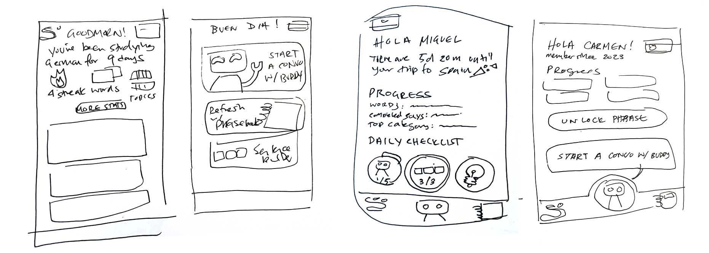

Dream Skate Maker
Overview
Dream Skate Maker is an ongoing personal project of mine that I started in 2022. Currently I singlehandedly manage the research, visual and experience design, and development. This page serves to document what I have accomplished and learned so far.
The Opportunity
Insert text here.
First Design
Insert text here
Discovering a Niche

Lindsay
the Immersive VacationeerMotivators: To brush up on Spanish and go deeper with grammatical nuances and pronunciation. Also driven by challenges
Desires: Wants a personalized experience where learning is based to her own tempo and built upon a goal in mind (e.g. traveling somewhere, being able to discuss everyday concepts with her parents). Loves flashcards.
Pain Points: Dislikes linear systems. Feels limited in other language learning apps that don't explore advanced topics like politics.
Biases: Anticipates correction on pronunciation or conjugation of words. Believes that vocabulary is necessary to advance in a language. Skeptical of the depth of AI conversations.
Based on the walkthrough with our participant, I created a persona to empathize and understand the Say user's motivators, desires, pain points, and biases. As I embarked new improvements to the Home page, I cross referenced these observations in order to meet the expectations and needs for the Say power user.
Moving Forward...
Prior to sketching, I researched the architecture of relevant applications and system. In addition to competing language learning apps, I also considered applications that measured personal growth such as activity trackers, games, horoscope apps, and banking. I wanted to fulfill the target user’s desire to have a space where they can reflect on their progress and accomplishments.
Option 2
Iterated from Option 1, Option 2 advances in the usability and playfulness of the app.
- Personalization: In addition to user data and greetings, the Buttons reference how the user used the app previously.
- Voice: With the Buddy acting as a peer, I emphasized the voice of the app as relaxed and casual.
- Non-linear Guidance: Introduction of daily challenges to inspire the user's goals for the day and educate new users what is possible.
- Bottom Navigation Bar: Creating quick access to the Sentence Builder – a unique activity in addition to the Buddy and Phrasebook.